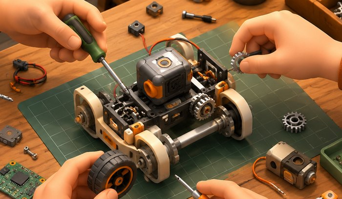

шаг 01
создавайте
инженерная поддержка, площадки и оборудование для прототипов и мелких серий

 правительство
правительствообъединяем разработку, испытания и внедрение
робототехнических решений в одной экосистеме
все возможности для развития робототехнических решений и подбора готовых технологий собраны в одной экосистеме
все четыре шага →инженерная поддержка, площадки и оборудование для прототипов и мелких серий

лаборатория и стенды, где решение проходит проверку в условиях реальной эксплуатации
запуск на настоящей задаче заказчика с оценкой эффекта и потенциала внедрения
сопровождение поставки и вывод решения в постоянную работу бизнеса и города
получите ресурсы для разработки робота, развития производства и подготовки первой поставки — от прототипа до реального применения
начните с задачи предприятия, найдите подходящее решение и используйте поддержку города для покупки, интеграции и обслуживания
17 решений в каталоге — промышленные, сервисные и транспортные
площадки в иц «сколково» и индустриальном парке «руднево»: от городской среды до испытаний в воздухе и на воде


выберите участок — покажем, как задача решается сейчас и что даёт робот
можно начать с одного инструмента и подключать остальные по мере развития проекта
поддержка покупки робототехнического решения для предприятия.
поддержка адаптации робота к действующим процессам предприятия.
возмещение части расходов на внедрение и запуск решения.
сервисная модель без единовременной покупки оборудования.
опишите задачу — поможем подобрать решение и формат пилота.
это городская экосистема робототехники: одна точка входа, где производители развивают и испытывают решения, а предприятия находят готовые технологии и получают поддержку на внедрение. сейчас портал работает как концептуальный прототип с демонстрационными данными.
разработчики и производители робототехники, у которых есть работающий прототип или серийное решение. подберём площадку, оборудование и формат испытаний — от стендов до реальной городской среды.
четыре шага: подбор задачи и площадки с метриками, запуск робота на объекте, сбор результатов по эффективности и нагрузке, решение о полноценном внедрении или доработке.
реестр — это подтверждение того, что решение проверено и готово к внедрению. заказчики фильтруют каталог по нему, а меры поддержки города доступны в первую очередь решениям из реестра.
размещение в каталоге, подбор площадки и сопровождение заявки — бесплатны. платными могут быть отдельные испытания и услуги партнёров: стоимость всегда согласуется заранее.
напишите на roboty@cluster.mos.ru или позвоните +7 (495) 870-45-55. расскажите про задачу или решение — ответим и предложим следующий шаг.